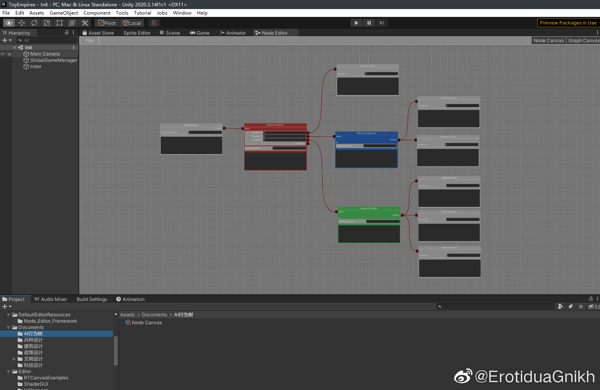

不应该熬夜的...今天看昨天的代码觉得像弱智，决定重写

ErotiduaGnikh
2022-05-07
ErotiduaGnikh
2022-05-07
晚安
1.电脑的散热好像坏掉了 ，虽然要工作了也该换电脑了，但是这样搞得我这段时间都不敢用电脑了，一开机就直飙90度然后降频，游戏是不敢玩了，我现在还怕我跑unity能把我电脑给点着。
，虽然要工作了也该换电脑了，但是这样搞得我这段时间都不敢用电脑了，一开机就直飙90度然后降频，游戏是不敢玩了，我现在还怕我跑unity能把我电脑给点着。
2.一点半准备上床，不知道怎么回事突然嫌弃现在这个写行为树的代码太反人类，于是灵感迸发“要不写一个可视化编辑器吧”——然后反应过来就三点钟了。我寻思这不就是api caller吗，怎么一下子吃掉我一个半小时的时间。
好烦好烦好烦好烦好烦
1.电脑的散热好像坏掉了
2.一点半准备上床，不知道怎么回事突然嫌弃现在这个写行为树的代码太反人类，于是灵感迸发“要不写一个可视化编辑器吧”——然后反应过来就三点钟了。
好烦好烦好烦好烦好烦
- 